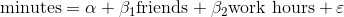
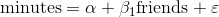

15.2 最小二乘模型的进一步假设
对于我们的模型（以及我们的解决方案）来说，需要添加另外两个假设，才能够言之有理。
第一个假设是 x 的各个列是线性无关 的，即任何一列绝对不会是其他列的加权和。如果这个假设不成立，则无法估计 beta 。为了了解极端的情形，我们可以想象数据中有一个额外的字段 num_acquaintances ，并且对于每一个用户来说它都等于 num_friends 。
那么，对于任何 beta ，如果 num_friends 的系数增加了某个数值，而 num_acquaintances 的系数同时减小相同数值的话，那么模型的预测就会保持不变。也就是说，我们根本就没有办法确定 num_friends 的系数。（通常来说，对于这个假设的违背情况一般不会这么明显。）
第二个重要的假设是 x 的各列与误差 ε 无关。如果这个假设不成立，对于 beta 的估计就会出现系统性的错误。
比如，在第 14 章中，我们建立的模型的预测结果为，用户每增加一个朋友，每天花在网站上的时间就会多出 0.90 分钟。
想象一下，还有下列情况。
工作时间越长的人在网站上花的时间越少。
朋友更多的人倾向于工作更长时间。
也就是说，假设“实际的”模型为：

并且工作时间和朋友数量是正相关的。那样的话，当我们最小化单变量模型的误差时：

我们会低估 β 1 。
考虑一下，如果这个单变量模型已知 β 1 的“实际”值，那么这时再用它来预测将会如何。（亦即，这个值来自令误差最小化的“实际”模型。）这时候，对工作时间比较长的用户来说，产生的预测值往往太小；对工作时间比较短的用户来说，产生的预测值往往又过大，这是因为 β 2 >0，但是我们“忘了”把它考虑进去。由于工作时间与朋友的数量是呈正相关的，这就意味着对于朋友数量较多的用户来说，模型给出的预测值往往太小；对于朋友数量较少的用户来说，模型给出的预测值往往太大。这样做的结果是，我们可以通过降低 β 1 的估计值来减少（单变量模型）的误差，即误差最小化的 β 1 是小于其“实际”值的。也就是说，在这种情况下，单变量的最小二乘解偏向于低估 β 1 。一般而言，当自变量具有与此类似的误差时，我们的最小二乘解给出的 β 是有偏估计。